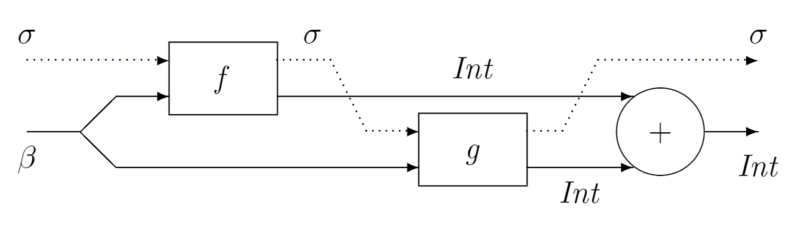

Arrow教程
Arrow 与计算
许多程序和库都和某种“计算”有关，这些“计算”接受输入，产生输出，但它们并不是普通的从输入映射到输出的函数。这篇文章探索了这种“计算”的特性，定义了一个通用的接口，称为 Arrow。这允许了所有这些“计算”共享基础设施，比如库，证明或者语法支持。Arrow 也提供了一套有用的方法来组织程序，并且允许你在一个更加普遍的角度编程。Monad 也是为了相似的目的服务，但 Arrow 更加一般。它把“计算”包含在静态的组件中，与输入独立。我们也考虑了一些 Arrow 的子类，其中一个其实是与 Monad 等价的，而其他的给 Arrow 世界带来了选择与反馈。
有了 Arrow，我们可以给出基于不同“计算”的通用程序结构。Arrow 倾向于让你写出 point-free 风格的代码，在证明普遍的性质时，这很有用。然而这并不符合所有人的口味，并且在某些情况下代码会变得很难以理解。解决方法是 Arrow 的 point-wise notation，它会自动被翻译成 Haskell 语言。因此，可以说每种“计算”都定义了一门 Haskell 的子语言。
1. “计算”
我们将通过四个不同的例子来阐述我们所说的“计算”是什么意思。我们将考虑下面的运算符应该怎样被推广到各种类型的“计算”。
1 | add :: (b -> Int) -> (b -> Int) -> (b -> Int) |
State transformers
和在函数间传递状态有关的程序可以被描述为：
1 | type state s i o = (s, i) -> (s, o) |
对于 State transformers 来说 add 就是
1 | addST :: State s b Int -> State s b Int -> State s b Int |
示意图如下：

addST 和 add 几乎完全一样，区别在于有一个状态 $\sigma$ 先穿过函数 $f$ 再穿过 $g$，最后产生结果状态。这并不是唯一的选择：我们同样可以定义一个状态先穿过 $g$ 再穿过 $f$ 的 addST。
Nondeterminism
许多搜索算法通常被描述为返回可能结果组成的列表的函数（空列表代表失败）：
1 | type NonDet i o = i -> [o] |
那么 add 的推广就是计算所有可能的组合。
1 | addND :: NonDet b Int -> NonDet b Int -> NonDet b Int |
这段代码在惰性求值下的效果和递归很相似。这个函数分别取出 $f$ 和 $g$ 的第一个元素来计算出列表的第一个元素。如果 $g$ 有下一个元素的话，取出它来计算第二个元素，否则取 $f$ 的第二个元素和 $g$ 的第一个元素，依此类推。
Map transformers
一个数据并行计算的算法会把一组值映射为另一组值，每组值都和集合 $s$ 中的元素一一对应：
1 | type MapTrans s i o = (s -> i) -> (s -> o) |
把 $s$ 当做时间，那么函数 $s \rightarrow a$ 就是一个随时间变化的量，或者说是 behaviour，而这个函数就是一个 behaviour transformer。
add 推广到 MapTrans 就是将两个函数逐点相加：
1 | addMT :: MapTrans s b Int -> MapTrans s b Int -> MapTrans s b Int |
Simple automata
一个为同步电路建模的方法是使用简单自动机，它能将输入映射为输出和新版本的自身：
1 | newtype Auto i o = A (i -> (o, Auto i o)) |
$add$ 函数的推广就是并行运行两个自动机并将输出结果加起来：
1 | addAuto :: Auto b Int -> Auto b Int -> Auto b Int |
Category 与 Functor
在上述例子中和其他相似的情况下，有一个类型为 $A \leadsto B$ 的计算，接受类型为 $A$ 的输入，产生类型为 $B$ 的输出。一个很自然的问题是这些例子还有什么共同之处。我们将定义一个充分一般化的接口，它能够涵盖我们的例子，但又足够强大能够编写一般的组合子如 $add$ 。
首先我们期望能通过把第一个计算的输出连接到第二个计算的输入来组合两个计算，并且这种组合存在一个单位元（一个将输入原样输出的计算）。这是标准的 Category 的定义。用 Haskell 表示为：
1 | class Category a where |
一个 Category 应满足以下的定律
$idA >>> f = f >>> idA = f$
$(f >>> g) >>> h = f >>> (g >>> h)$
纯函数是一个 Category：
1 | instance Category (->) where |
Category 是一个非常普遍的概念，包括以上的例子的很多东西都是 Category。然而这个接口对编程来说有点太普遍了（或者说提供的东西太少）。首先，我们还需要一个能把通常的函数嵌入的组合子 pure。
1 | pure :: (b -> c) -> a b c |
满足以下定律：
$pure \ id = idA$
$pure \ (g \cdot f) = pure \ f >>> pure \ g$
通常函数式程序员只使用从函数到函数的函子，但这里的 $pure$ 是一个从函数到 Category 的函子。
有了 $pure$，我们就可以把普通的函数，比如 $+$ 提升到“计算”，但这仍然不足以表达广义的 add